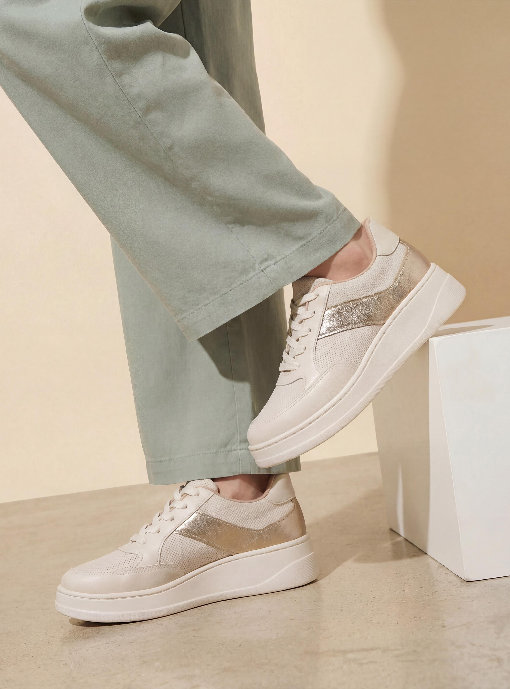

Blogs > Caso curioso #2
CASO CURIOSO #2: ¿Cuándo renovar tus zapatillas?

La espuma de amortiguación de unas zapatillas de uso diario se compacta con el tiempo y deja de absorber impactos. En promedio, conviene renovarlas cada 600 a 800 kilómetros de uso, o una vez al año si las usas todos los días.
Señales de desgaste: suela lisa en la zona del talón, arrugas profundas en la entresuela e incomodidad en rodillas o tobillos después de caminar.
Un modelo liviano con buena ventilación, como nuestras Zapatillas Urbanas Flex, es ideal para el uso diario y la actividad física ligera.
Volver a blogs